Links
Slides
Here are condensed presentations of some of my works:
- Spectral theory for homogenization, which I presented at Oldenburg in September 2022
- Building the Kohn-Sham potential, which I presented at Dijon in March 2021
- New Hohenberg-Kohn theorems, which I presented at Singapore in September 2019
- Unique continuation for the Hohenberg-Kohn theorem, which I presented at Banff in January 2019
Codes
On my github repository, you can find:
- a code to compute the eigenmodes of the homogenized Schrödinger operator, corresponding to this article
- a code to propagate in time the exact many-body Schrödinger operator containing the two-body interaction between particles, in dimension one but for any number of particles
- a code to obtain the inverse potential of some one-body density, corresponding to this article
Many-body quantum mechanics
The goal of my work, as of many researchers in mathematical physics or in physics, is to understand how we can obtain qualitative and quantitative information on many-body systems. More precisely, I work on non-relativistic quantum mechanics, which fundamental object is the many-body Schrödinger Hamiltonian \begin{align*} H_N := \sum_{n=1}^{N} \pa{-\Delta_{x_n} + v(x_n)} + \sum_{1 \le n,m \le N} w(x_n - x_m). \end{align*} The function \(v \in (L^p+L^{\infty})(\R^d)\) is the external electric potential, the function \(w \in (L^p+L^{\infty})(\R^d)\) is the electric interaction potential between the \(N \in \N\) particles. The number \(p\) is taken to be \begin{align}\label{eq:p_values} p = 1 \text{ for } d=1, \qquad p > 1 \text{ for } d = 2, \qquad p = d/2 \text{ for } d \ge 3, \end{align} so that \(H_N\) is bounded from below by Sobolev's inequality. We consider that the wave-functions \(\Psi \in H^1(\R^{dN})\), on which the Hamiltonian acts, model an entangled set of \(N\) electrons, and by the indistinguishability of particles in quantum theories, they are antisymmetric under exchange of particles. The quantity \(\ab{\Psi}^2(x_1, \dots, x_N)\) is experimentally the probability density of presence of the set of \(N\) particles, hence \(\int_{\R^{dN}} \ab{\Psi}^2 = 1\). Moreover, the energy of a state \(\Psi\) is \(\ps{\Psi,H_N \Psi}\) In time-dependent settings, it evolves under the equation \(-i\partial_t \Psi = H \Psi\), while at equilibrium it is a minimizer of the eigenvalue problem \begin{align*} E_0 := \myinf{\Psi \in H^1(\R^{dN}) \\ \nor{\Psi}{L^2(\R^{dN})} = 1} \ps{\Psi, H_N \Psi}, \end{align*} and \(E_0\) is called the ground state energy.
The operator \(H_N\) is very important in today's science, lying at the heart of condensed matter, quantum chemistry, and some parts of material science and nuclear physics. Unfortunately, this optimization problem is out of reach already for a few electrons, because the required numerical ressources increase exponentially with \(N\). Consequently, to meet the many needs of quantum mechanics, which are still growing fast, countless technics where and are still under development.
My works in Density functional theory
Introduction
Density functional theory (DFT) is the most efficient and used way of obtaining quantitative information on many-body quantum systems, when the number of electrons \(N\) lies between \(5 \cdot 10^1\) and \(10^3\). To describe it, we define the marginal of \(\ab{\Psi}^2\) over \(N-1\) particles, called the density \begin{align*} \rho_{\Psi}(x) := N \int_{\R^{d(N-1)}} \ab{\Psi}^2(x,x_2,\dots,x_N) \d x_2 \cdots \d x_N, \end{align*} which is a real positive function of \(\R^d\), is experimentally accessible, numerically small, and has a simple interpretation. Using the density as a basic variable was already done in the infancy of quantum mechanics by the Thomas-Fermi theory. Also, from a more mathematical point of view, the use of the density in the many-body theory is very natural, as we see in the inequalities of Lieb-Thirring \eqref{LieThi91} and Lieb-Oxford \eqref{LieOxf81} for instance.
A first approach to DFT consists in splitting the many-body minimization problem into two parts. Using that \begin{align*} \ps{\Psi,\pa{\sum_{n=1}^{N} v(x_n)} \Psi} = \int_{\R^d} v \rho_\Psi \end{align*} for any \(\Psi \in L^2(\R^{dN})\)and defining the Levy-Lieb functional \begin{align*} F(\rho) := \myinf{\Psi \in H^1\ind{a}(\R^{dN}) \\ \rho_\Psi = \rho}\ps{\Psi,H_N(0) \Psi}, \end{align*} we have \begin{align*} E(v) = \myinf{\rho \in L^1(\R^d) \\ \rho \ge 0 \\ \int_{\R^d} \rho = N} \myinf{\Psi \in H^1\ind{a}(\R^{dN}) \\ \rho_\Psi = \rho} \pa{\ps{\Psi,H_N(0) \Psi} + \int_{\R^d} v \rho} = \myinf{\rho \in L^1(\R^d) \\ \rho \ge 0 \\ \int_{\R^d} \rho = N} \pa{F(\rho) + \int_{\R^d} v \rho}. \end{align*} A significant part of quantum chemistry consists in finding approximations of the functional \(F(\rho)\). The Thomas-Fermi functional is a first instance.
A second approach of DFT is a formulation in terms of an inverse problem \eqref{KohSha65}. Let us consider that we describe a system of \(N\) quantum electrons via the density \(\rho_{\Psi(v,w)}\) of a ground state of an interacting system labeled by \((v,w)\). As we mentioned before, the associated eigenmodes problem is too complicated, and the idea is to replace the exact system by a much simpler one \((v_{\text{KS}},0)\) in which there is no interaction.
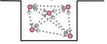
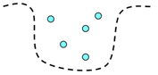
Indeed, in the non-interacting case, the \(N\)-body eigenvalue problem factorizes to a \(1\)-body one, in which one needs to compute the \(N\) first eigenmodes, but this is theoretically and numerically accessible. In this manner, we obtain approximations for any physical quantities. Mapping an interacting system to a non-interacting one is ubiquitous in physics, and they distinguish by the way they build the effective fields. The idea of DFT is to choose the effective potential \(v_{\text{KS}}\), called the Kohn-Sham potential, such that the one ground state density of \((v,w)\) and \((v_{\text{KS}},0)\) are equal, \begin{align*} \rho_{\Psi(v,w)} = \rho_{\Psi(v_\text{KS},0)}. \end{align*} This is an inverse problem needing existence and uniqueness results.
Uniqueness
The uniqueness result founding DFT is called the Hohenberg-Kohn theorem, named after its discoverers \eqref{HohKoh64}. Here is the statement: taking a fixed interaction \(w \in L^q(\R^d)\) and two potentials \(v,u \in L^q(\R^d)\) having ground states \(\Psi_u,\Psi_v\), if \(\rho_{\Psi_u} = \rho_{\Psi_v}\), then \(v = u + c\) where \(c \in \R\) is a constant. Said differently, the ground state density contains all the information of a quantum system. In \eqref{Lieb83b}, Lieb realized that the mathematical step of this theorem, enabling to obtain values of \(q\), relies on a strong unique continuation result, and he conjectured that we could take \(q\) as in \eqref{eq:p_values}.
By a result of Jerison and Kenig \eqref{JerKen85}, the mathematical literature only allowed to take \(q = dN/2\), and for \(N \ge 2\) the Coulomb singularities arising from physical settings could no be taken into account. Hence, using technics from Carleman \eqref{Car39}, Hörmander \eqref{Hormander83} and Koch-Tataru \eqref{KocTat01}, I showed a unique continuation principle taylored for many-body Schrödinger Hamiltonians, enabling to take \(q > \max(2d/3,2)\), which can treat Coulomb-like singularities.
Existence
The equivalent exact existence result was proved for classical systems at positive temperature by Chayes, Chayes and Lieb in \eqref{ChaChaLie84} and for quantum particles on a grid in \eqref{ChaChaRus85}. For the exact quantum case at zero temperature, a first existence result from Lieb \eqref{Lieb83b} established that there is always an approximate inverse in the case where we allow to take mixed states, and in the case of the first eigenmode, but using the abstract Bishop-Phelps theorem. On the other hand, starting from \eqref{WuYan03}, there were many physics works about the practical computation of \(v_\text{KS}\), based on the maximization of DFT's dual functional, \begin{align*} G_\rho(v) := E(v) - \int_{\R^d} v \rho, \qquad \text{where } E(v) := \myinf{\Psi \in H^1(\R^d) \\ \nor{\Psi}{L^2(\R^d)} = 1} \ps{\Psi,H_N(v) \Psi}. \end{align*}
In \eqref{Garrigue21}, I worked on the weak-strong continuity of the potential-to-density map of DFT (the direct map), showing that the inverse problem is ill-posed. Then in \eqref{Garrigue22}, I used a constructive approach to prove an existence theorem for any state.
Practical inversion
The standard algorithm maximizing the dual functional was generally blocking, so I also gave an algorithm in \eqref{Garrigue22} which removes this problem. Here is for instance a graph where we plot the density on which we launch the algorithm, together with the converged inverse density. In this case, we choose to have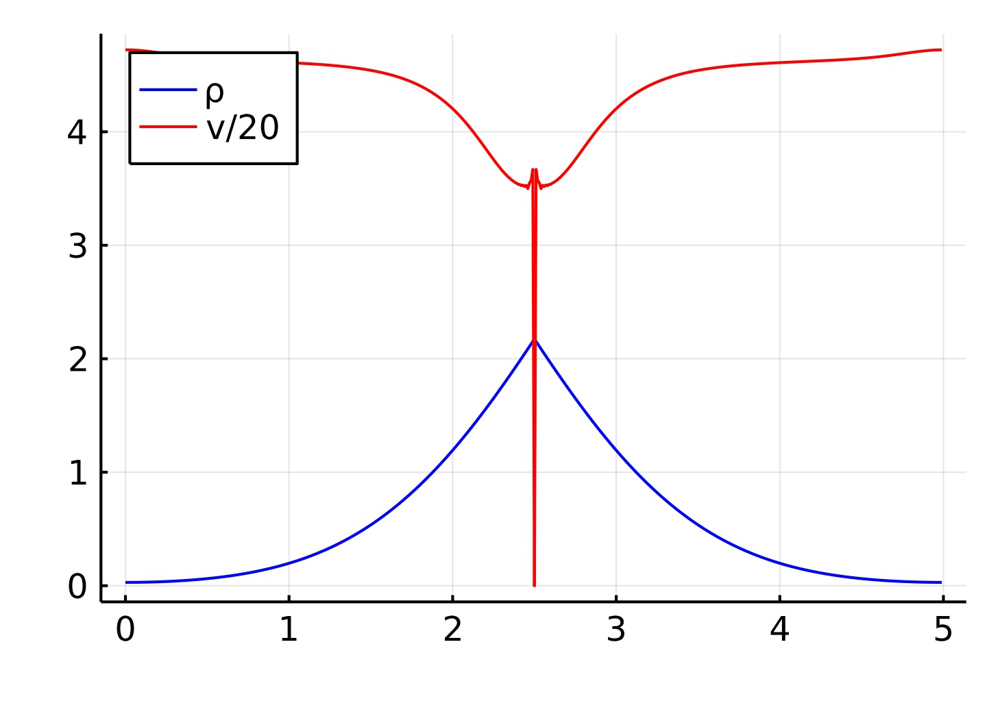
In a second case, we choose a density \(\rho\), represented in blue, such that \(\int_{\R^d} \rho = 1\), and we successively find the inverse potentials of the densities \(N \rho\) for increasing values of \(N \in \N\). We remark that up to a factor \(N^{2/d}\), they converge very quickly to the Thomas-Fermi potential, accordingly to the "direct" Thomas-Fermi theory.
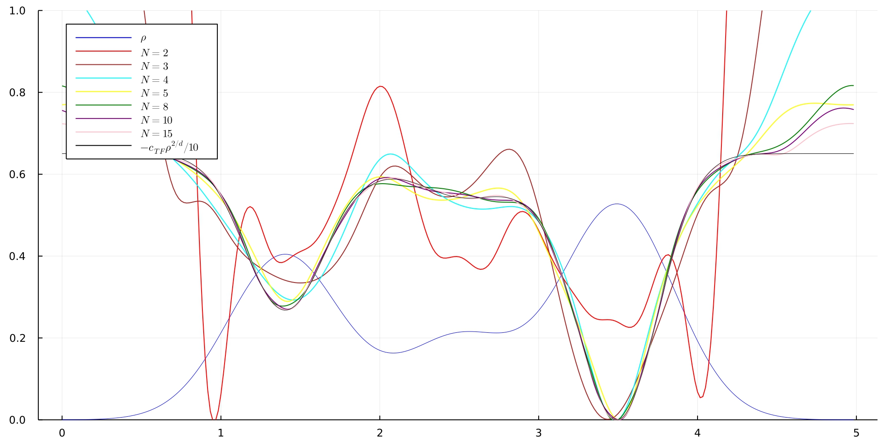
Bibliography
\begin{align} &\bibref{T. Carleman, Sur un problème d’unicité pour les systèmes d’équations aux dérivées partielles à deux variables indépendantes, Ark. Mat. Astr. Fys. 2B (1939) 1-9} \label{Car39} \\ &\bibref{J. Chayes, L. Chayes, and E. H. Lieb, The inverse problem in classical statistical mechanics, Comm. Math. Phys, 93 (1984), pp. 57–121.} \label{ChaChaLie84} \\ &\bibref{J. Chayes, L. Chayes, and M. B. Ruskai, Density functional approach to quantum lattice systems, J. Stat. Phys, 38 (1985), pp. 497–518} \label{ChaChaRus85} \\ &\bibref{L. Garrigue. Building Kohn-Sham potentials for ground and excited states, Archive for Rational Mechanics and Analysis (2022)} \label{Garrigue22} \\ &\bibref{L. Garrigue, Some properties of the potential-to-ground state map in quantum mechanics, Commun. Math. Phys, 386 (2021), pp. 1803–1844.} \label{Garrigue21} \\ &\bibref{L. Garrigue. Hohenberg-Kohn theorems for interactions, spin and temperature, J. Stat. Phys. 177, 415–437(2019)} \label{Garrigue19b} \\ &\bibref{L. Garrigue, Unique continuation for many-body Schrödinger operators and the Hohenberg-Kohn theorem. II. The Pauli Hamiltonian, Doc. Math, 25, 869-898, (2020).} \label{Garrigue19} \\ &\bibref{L. Garrigue, Unique continuation for many-body Schrödinger operators and the Hohenberg-Kohn theorem, Math. Phys. Anal. Geom, 21 (2018), p. 27.} \label{Garrigue18} \\ &\bibref{P. Hohenberg and W. Kohn, Inhomogeneous electron gas, Phys. Rev, 136 (1964), pp. B864–B871.} \label{HohKoh64} \\ &\bibref{L. Hörmander, The analysis of linear partial differential operators, volume 1-4, 1983.} \label{Hormander83} \\ &\bibref{D. Jerison and C. E. Kenig, Unique continuation and absence of positive eigenvalues for Schrödinger operators, Ann. of Math. (2), 121 (1985), pp. 463–494. With an appendix by E. M. Stein.} \label{JerKen85} \\ &\bibref{H. Koch and D. Tataru, Carleman estimates and unique continuation for secondorder elliptic equations with nonsmooth coefficients, Commun. Math. Phys, 54 (2001), pp. 339–360.} \label{KocTat01} \\ &\bibref{W. Kohn and L. J. Sham, Self-consistent equations including exchange and correlation effects, Phys. Rev. (2), 140 (1965), pp. A1133–A1138} \label{KohSha65} \\ &\bibref{E. H. Lieb, Density functionals for Coulomb systems, Int. J. Quantum Chem, 24 (1983), pp. 243–277.} \label{Lieb83b} \\ &\bibref{E. H. Lieb, S. Oxford, Improved lower bound on the indirect Coulomb energy. Int. J. Quantum Chem. 19 (3): 427 (1981).} \label{LieOxf81} \\ &\bibref{E. H. Lieb, and W. E. Thirring (1991). The Stability of Matter: From Atoms to Stars. Princeton University Press. pp. 135–169.} \label{LieThi91} \\ &\bibref{Q. Wu and W. Yang, A direct optimization method for calculating density functionals and exchange–correlation potentials from electron densities, J. Chem. Phys, 118 (2003), pp. 2498–2509.} \label{WuYan03} \\ \end{align}
Our work in twisted bilayer graphene (with É. Cancès and D. Gontier)
Introduction
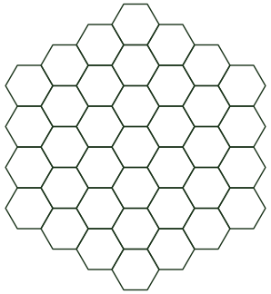
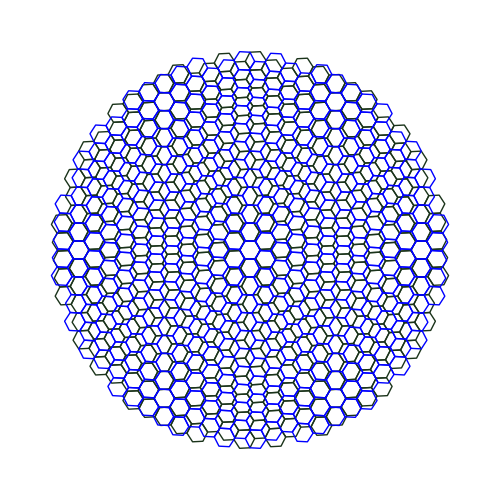
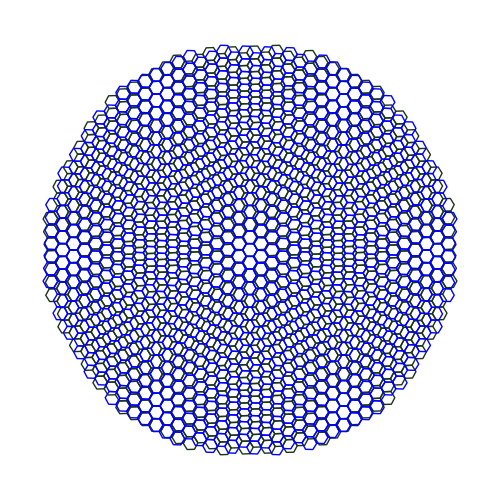
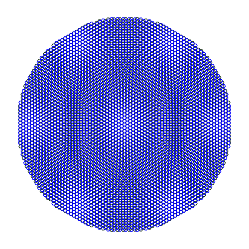
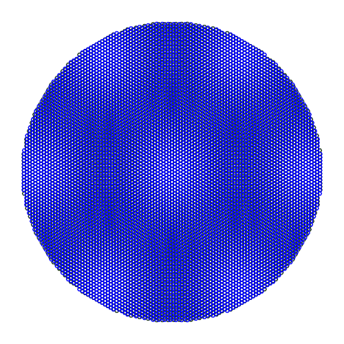
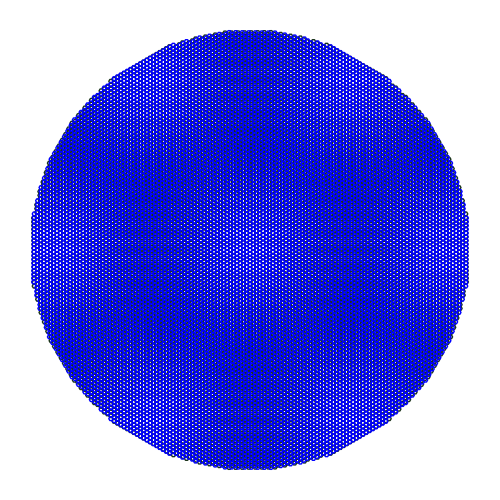
The Bistritzer-MacDonal Hamiltonian
Let us define the Pauli matrices \begin{align*} \sigma_1 := \mat{0 & 1 \\ 1 & 0}, \qquad \sigma_2 := \mat{0 & -i \\ i & 0}, \qquad \sigma := \mat{\sigma_1 \\ \sigma_2}, \end{align*} the complex number \(\omega := e^{i \f{2\pi}{3}}\), the vectors \(q_1 := (0,-1), q_2 := R_{\f{2\pi}{3}} q_1, q_3 := R_{\f{2\pi}{3}} q_2\) and the potentials \begin{align*} F(x) := e^{-iq_1 x} + \overline{\omega} e^{-iq_2 x}+ \omega e^{-iq_3 x}, \qquad G(x) := e^{-iq_1 x} + e^{-iq_2 x}+ e^{-iq_3 x}, \qquad T(x) := \mat{w\ind{AA} G(x) & w\ind{AB} F(x) \\ w\ind{AB} \overline{F(-x)} & w\ind{AA} G(x)}. \end{align*} The Bistritzer-MacDonald Hamiltonian \eqref{BisMac11}, which is the standard effective operator of the bilayer-graphene system, is \begin{align*} H_\text{BM} = \mat{v\ind{F} \sigma \cdot (-i\nabla) & \f{1}{\ep} T(x) \\ \f{1}{\ep} T^*(x) & v\ind{F}\sigma \cdot (-i\nabla)}. \end{align*} where Its derivation is done from the approximated tight-binding model.A new derivation
In \eqref{CanGarGon22}, we proposed another way of deriving Bistritzer-MacDonald-like Hamiltonians enabling to model twisted multilayer quantum systems. The standard derivation starts from the tight-binding approximated model, while in \eqref{CanGarGon22} we start from a monolayer one-body Hamiltonian in the whole \(\R^d\) space. We extract the two degenerate Fermi states \((\phi_j)_{j \in \{1,2\}}\) forming the Dirac energy cone and studied mathematically by Fefferman and Weinstein \eqref{FefWei12}, and we apply the variational approximation in the space \(\text{Span } \pa{U^\eta \phi_j}_{j \in \{1,2\}}^{\eta \in \{+,-\}}\), where \(U^\eta := R_{\eta \theta/2} \tau_{d e_z/2} \), \(R_\delta\) being the rotation operator, around the \(z\)-axis, and \(\tau_{y}\) being the translation of vector \(y\). We deduce an effective operator of the form H\ind{eff} = \mat{v\ind{F} \sigma \cdot (-i\nabla) & J(-i\nabla \Sigma)(x) \cdot (-i\nabla) \\ J(-i\nabla \Sigma^*)(x) \cdot (-i\nabla) & v\ind{F}\sigma \cdot (-i\nabla) } + \f{1}{\ep} \mat{\bbW^+(x) & \bbV(x) \\ \bbV^*(x) & \bbW^+(x) } + O(\ep) \end{align*} where \begin{align*} \f{\nor{\bbV - T}{L^2(\Omega,\C^4)}}{\nor{T}{L^2(\Omega,\C^4)}} \sim 10^{-3} \end{align*}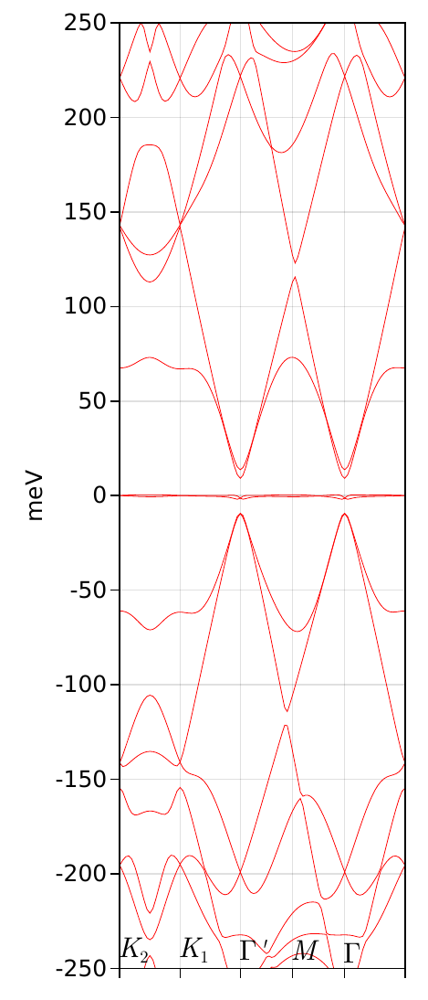
Bibliography
\begin{align} &\bibref{S. Becker, T. Humbert, and M. Zworski, Fine structure of flat bands in a chiral model of magic angles, arXiv preprint arXiv:2208.01628, (2022).} \label{BecHumZwo22b} \\ &\bibref{S. Becker, T. Humbert, and M. Zworski, Integrability in the chiral model of magic angles, arXiv preprint arXiv:2208.01620, (2022).} \label{BecHumZwo22} \\ &\bibref{R. Bistritzer, A. H. MacDonald. Moiré bands in twisted double-layer graphene. Proceedings of the National Academy of Sciences. 108 (30): 12233–12237 (2011).} \label{BisMac11} \\ &\bibref{É. Cancès, L. Garrigue, D. Gontier. A simple derivation of moiré-scale continuous models for twisted bilayer graphene (arxiv:2206.05685), preprint (2022)} \label{CanGarGon22} \\ &\bibref{Y. Cao, V. Fatemi, S. Fang, K. Watanabe, T. Taniguchi, E. Kaxiras, P. Jarillo-Herrero (5 March 2018). Unconventional superconductivity in magic-angle graphene superlattices. Nature. 556 (7699): 43–50} \label{CaoFatFan18} \\ &\bibref{C. Fefferman and M. Weinstein, Honeycomb lattice potentials and Dirac points, J. Am. Math. Soc, 25 (2012), pp. 1169–1220.} \label{FefWei12} \\ &\bibref{G. Tarnopolsky, A. J. Kruchkov, and A. Vishwanath. Origin of Magic Angles in Twisted Bilayer Graphene. Phys. Rev. Letters 122.10 (2019).} \label{TarKruVis19}\\ &\bibref{A. B. Watson, T. Kong, A. H. MacDonald, and M. Luskin, Bistritzer-macdonald dynamics in twisted bilayer graphene, arXiv preprint arXiv:2207.13767, (2022).} \label{WatKonMac22} \\ &\bibref{A. B. Watson and M. Luskin, Existence of the first magic angle for the chiral model of bilayer graphene. J. Math. Phys 62.9 (2021), p. 091502.} \label{WatLus21} \\ &\bibref{S. Becker, M. Embree, J. Wittsten, and M. Zworski, Mathematics of magic angles in a model of twisted bilayer graphene, Probability and Mathematical Physics, 3 (2022), pp. 69–103.} \label{BecEmbWit22} \\ \end{align}